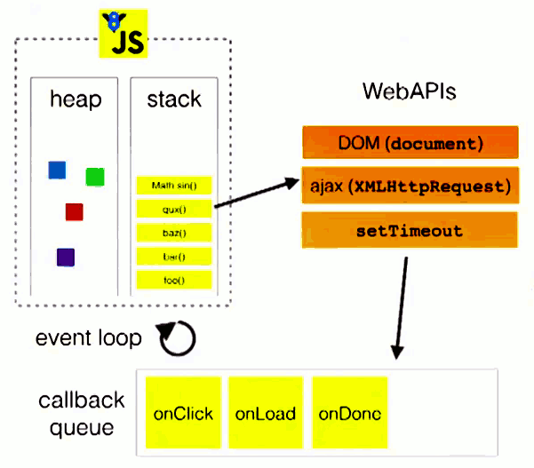

<!DOCTYPE html>


  


<html class="theme-next mist use-motion" lang="">
<head>
  <meta charset="UTF-8"/>
<meta http-equiv="X-UA-Compatible" content="IE=edge" />
<meta name="viewport" content="width=device-width, initial-scale=1, maximum-scale=1"/>
<meta name="theme-color" content="#222">


<meta http-equiv="Cache-Control" content="no-transform" />
<meta http-equiv="Cache-Control" content="no-siteapp" />


  
  
  <link href="/lib/fancybox/source/jquery.fancybox.css?v=2.1.5" rel="stylesheet" type="text/css" />


  
  
  
  

  
    
    
  

  

  

  

  

  
    
    
    <link href="//fonts.googleapis.com/css?family=Lato:300,300italic,400,400italic,700,700italic&subset=latin,latin-ext" rel="stylesheet" type="text/css">
  


<link href="/lib/font-awesome/css/font-awesome.min.css?v=4.6.2" rel="stylesheet" type="text/css" />

<link href="/css/main.css?v=5.1.2" rel="stylesheet" type="text/css" />


  <meta name="keywords" content="Sevens,JS,front-end" />


  <link rel="shortcut icon" type="image/x-icon" href="/favicon.ico?v=5.1.2" />


<meta name="description" content="单线程众所周知，Javascript的一大特点是单线程，这种设计是为了最初减少浏览器解析的复杂性，避免多条线程同时操作DOM，造成并发性的问题。 当然，现在已经有了Web Worker，但是，同样是不能在Worker中操作DOM，保持JS主线程的纯洁性。 Event Loop在我们开发的时候，是不可避免有高运算量或者需要等待的代码块来堵塞我们的主线程的，会造成画面停滞，JS使用了Even">
<meta property="og:type" content="article">
<meta property="og:title" content="理解JS并发模型 - Event Loop, Micro Task, Macro Task">
<meta property="og:url" content="https://superhos.github.io/2019/01/24/understand-event-loop/index.html">
<meta property="og:site_name" content="Sevens Chan blog">
<meta property="og:description" content="单线程众所周知，Javascript的一大特点是单线程，这种设计是为了最初减少浏览器解析的复杂性，避免多条线程同时操作DOM，造成并发性的问题。 当然，现在已经有了Web Worker，但是，同样是不能在Worker中操作DOM，保持JS主线程的纯洁性。 Event Loop在我们开发的时候，是不可避免有高运算量或者需要等待的代码块来堵塞我们的主线程的，会造成画面停滞，JS使用了Even">
<meta property="og:locale" content="default">
<meta property="og:image" content="https://superhos.github.io/2019/01/24/understand-event-loop/1.png">
<meta property="og:updated_time" content="2019-01-24T14:30:59.819Z">
<meta name="twitter:card" content="summary">
<meta name="twitter:title" content="理解JS并发模型 - Event Loop, Micro Task, Macro Task">
<meta name="twitter:description" content="单线程众所周知，Javascript的一大特点是单线程，这种设计是为了最初减少浏览器解析的复杂性，避免多条线程同时操作DOM，造成并发性的问题。 当然，现在已经有了Web Worker，但是，同样是不能在Worker中操作DOM，保持JS主线程的纯洁性。 Event Loop在我们开发的时候，是不可避免有高运算量或者需要等待的代码块来堵塞我们的主线程的，会造成画面停滞，JS使用了Even">
<meta name="twitter:image" content="https://superhos.github.io/2019/01/24/understand-event-loop/1.png">


<script type="text/javascript" id="hexo.configurations">
  var NexT = window.NexT || {};
  var CONFIG = {
    root: '/',
    scheme: 'Mist',
    sidebar: {"position":"left","display":"post","offset":12,"offset_float":12,"b2t":false,"scrollpercent":false,"onmobile":false},
    fancybox: true,
    tabs: true,
    motion: true,
    duoshuo: {
      userId: '0',
      author: 'Author'
    },
    algolia: {
      applicationID: '',
      apiKey: '',
      indexName: '',
      hits: {"per_page":10},
      labels: {"input_placeholder":"Search for Posts","hits_empty":"We didn't find any results for the search: ${query}","hits_stats":"${hits} results found in ${time} ms"}
    }
  };
</script>


  <link rel="canonical" href="https://superhos.github.io/2019/01/24/understand-event-loop/"/>


<link rel="stylesheet" href="https://imsun.github.io/gitment/style/default.css">
<script src="https://www.wenjunjiang.win/js/gitment.js"></script>


  <title>理解JS并发模型 - Event Loop, Micro Task, Macro Task | Sevens Chan blog</title>
  


</head>

<body itemscope itemtype="http://schema.org/WebPage" lang="default">

  
  
    
  

  <div class="container sidebar-position-left page-post-detail ">
    <div class="headband"></div>

    <header id="header" class="header" itemscope itemtype="http://schema.org/WPHeader">
      <div class="header-inner"><div class="site-brand-wrapper">
  <div class="site-meta ">
    

    <div class="custom-logo-site-title">
      <a href="/"  class="brand" rel="start">
        <span class="logo-line-before"><i></i></span>
        <span class="site-title">Sevens Chan blog</span>
        <span class="logo-line-after"><i></i></span>
      </a>
    </div>
      
        <p class="site-subtitle">陈日天技术博客</p>
      
  </div>

  <div class="site-nav-toggle">
    <button>
      <span class="btn-bar"></span>
      <span class="btn-bar"></span>
      <span class="btn-bar"></span>
    </button>
  </div>
</div>

<nav class="site-nav">
  

  
    <ul id="menu" class="menu">
      
        
        <li class="menu-item menu-item-home">
          <a href="/" rel="section">
            
              <i class="menu-item-icon fa fa-fw fa-home"></i> <br />
            
            Home
          </a>
        </li>
      
        
        <li class="menu-item menu-item-archives">
          <a href="/archives/" rel="section">
            
              <i class="menu-item-icon fa fa-fw fa-archive"></i> <br />
            
            Archives
          </a>
        </li>
      
        
        <li class="menu-item menu-item-tags">
          <a href="/tags/" rel="section">
            
              <i class="menu-item-icon fa fa-fw fa-tags"></i> <br />
            
            Tags
          </a>
        </li>
      

      
    </ul>
  

  
</nav>


 </div>
    </header>

    <main id="main" class="main">
      <div class="main-inner">
        <div class="content-wrap">
          <div id="content" class="content">
            

  <div id="posts" class="posts-expand">
    

  

  
  
  

  <article class="post post-type-normal" itemscope itemtype="http://schema.org/Article">
  
  
  
  <div class="post-block">
    <link itemprop="mainEntityOfPage" href="https://superhos.github.io/2019/01/24/understand-event-loop/">

    <span hidden itemprop="author" itemscope itemtype="http://schema.org/Person">
      <meta itemprop="name" content="SevensChan">
      <meta itemprop="description" content="">
      <meta itemprop="image" content="/images/avatar.gif">
    </span>

    <span hidden itemprop="publisher" itemscope itemtype="http://schema.org/Organization">
      <meta itemprop="name" content="Sevens Chan blog">
    </span>

    
      <header class="post-header">

        
        
          <h1 class="post-title" itemprop="name headline">理解JS并发模型 - Event Loop, Micro Task, Macro Task</h1>
        

        <div class="post-meta">
          <span class="post-time">
            
              <span class="post-meta-item-icon">
                <i class="fa fa-calendar-o"></i>
              </span>
              
                <span class="post-meta-item-text">Posted on</span>
              
              <time title="Post created" itemprop="dateCreated datePublished" datetime="2019-01-24T22:20:52+08:00">
                2019-01-24
              </time>
            

            

            
          </span>

          

          
            
          

          
          

          

          

          

        </div>
      </header>
    

    
    
    
    
    <div class="post-body" itemprop="articleBody">

      
      

      
        <h2 id="单线程"><a href="#单线程" class="headerlink" title="单线程"></a>单线程</h2><p>众所周知，Javascript的一大特点是单线程，这种设计是为了最初减少浏览器解析的复杂性，避免多条线程同时操作DOM，造成并发性的问题。</p>
<p>当然，现在已经有了Web Worker，但是，同样是不能在Worker中操作DOM，保持JS主线程的纯洁性。</p>
<h2 id="Event-Loop"><a href="#Event-Loop" class="headerlink" title="Event Loop"></a>Event Loop</h2><p>在我们开发的时候，是不可避免有高运算量或者需要等待的代码块来堵塞我们的主线程的，会造成画面停滞，JS使用了Event Loop的概念来应对这个问题。</p>
<p>浏览器提供一系列的Web API供我们去调用，主要可以分为Macrotask(Task) 和 Microtask (Job)。</p>
<ul>
<li>Macrotask包括：setTimeout, setInterval, setImmediate (仅IE支持), requestAnimationFrame, I/O, UI rendering, XMLHttpRequest, fetch</li>
<li>Microtask包括：process.nextTick (node.js支持), Promises, Object.observe（废弃）, MutationObserver</li>
</ul>
<p>接下来看一下Event Loop的整体示意图：<br></p>
<p>可以看到主要的部分就是一个栈和队列，都是基本的数据结构，这里就不展开讲了。但是队列并不止一条，而是Macrotask和Microtask都分别有一条队列。</p>
<p>这里举个例子来了解一下整个循环的运作：<br><figure class="highlight javascript"><table><tr><td class="gutter"><pre><span class="line">1</span><br><span class="line">2</span><br><span class="line">3</span><br><span class="line">4</span><br><span class="line">5</span><br><span class="line">6</span><br><span class="line">7</span><br><span class="line">8</span><br><span class="line">9</span><br></pre></td><td class="code"><pre><span class="line"><span class="built_in">console</span>.log(<span class="string">'script start'</span>) <span class="comment">// 1</span></span><br><span class="line"></span><br><span class="line"><span class="comment">// 2</span></span><br><span class="line">setTimeout(<span class="function"><span class="keyword">function</span>(<span class="params"></span>)</span>&#123;</span><br><span class="line">    <span class="built_in">console</span>.log(<span class="string">'set timeout done'</span>)</span><br><span class="line">&#125;, <span class="number">1000</span>)</span><br><span class="line"></span><br><span class="line"><span class="comment">// 3</span></span><br><span class="line"><span class="built_in">console</span>.log(<span class="string">'script end'</span>)</span><br></pre></td></tr></table></figure></p>
<p>具体步骤：</p>
<ol>
<li>首先是 <code>console.log(&#39;script start&#39;)</code> 推入执行栈，没有异步操作，所以直接输出<code>script start</code></li>
<li>然后是 <code>setTimeout</code> 推入执行栈，执行栈执行的是<strong>调用</strong>Web API <code>setTimeout</code>的操作，而不是负责执行它本身，因此调用了Web API之后，就可以出栈了。</li>
<li>Web API被调用之后，会执行<code>setTimeout</code>，在确认执行完之后（此处的操作就是倒数1000ms），就会把<code>setTimeout</code>的回调送到 Macrotask 队列中去。</li>
<li>接下来把 <code>console.log(&#39;script end&#39;)</code> 推入到执行栈中，并且输出 <code>script end</code></li>
<li>此时，<strong>如果执行栈为空</strong>，就会开始执行macrotask，把3中的回调执行函数推到执行栈中，输出<code>script end</code></li>
</ol>
<p>看起来相当的清晰，如果有microtask的情况呢</p>
<figure class="highlight javascript"><table><tr><td class="gutter"><pre><span class="line">1</span><br><span class="line">2</span><br><span class="line">3</span><br><span class="line">4</span><br><span class="line">5</span><br><span class="line">6</span><br><span class="line">7</span><br><span class="line">8</span><br><span class="line">9</span><br><span class="line">10</span><br><span class="line">11</span><br><span class="line">12</span><br><span class="line">13</span><br><span class="line">14</span><br><span class="line">15</span><br><span class="line">16</span><br></pre></td><td class="code"><pre><span class="line"><span class="built_in">console</span>.log(<span class="string">'script start'</span>) <span class="comment">// 1</span></span><br><span class="line"></span><br><span class="line"><span class="comment">// 2</span></span><br><span class="line">setTimeout(<span class="function"><span class="keyword">function</span>(<span class="params"></span>)</span>&#123;</span><br><span class="line">    <span class="built_in">console</span>.log(<span class="string">'set timeout done'</span>)</span><br><span class="line">&#125;, <span class="number">1000</span>)</span><br><span class="line"></span><br><span class="line"><span class="comment">// 3</span></span><br><span class="line"><span class="built_in">Promise</span>.resolve().then(<span class="function"><span class="params">()</span> =&gt;</span> &#123;</span><br><span class="line">    <span class="built_in">console</span>.log(<span class="string">'microtask 1'</span>)</span><br><span class="line">&#125;).then(<span class="function"><span class="params">()</span> =&gt;</span> &#123;</span><br><span class="line">    <span class="built_in">console</span>.log(<span class="string">'microtask 2'</span>)</span><br><span class="line">&#125;)</span><br><span class="line"></span><br><span class="line"><span class="comment">// 4</span></span><br><span class="line"><span class="built_in">console</span>.log(<span class="string">'script end'</span>)</span><br></pre></td></tr></table></figure>
<p>具体步骤：</p>
<ol>
<li>首先是 <code>console.log(&#39;script start&#39;)</code> 推入执行栈，没有异步操作，所以直接输出<code>script start</code></li>
<li>然后是 <code>setTimeout</code> 推入执行栈，执行栈执行的是<strong>调用</strong>Web API <code>setTimeout</code>的操作，而不是负责执行它本身，因此调用了Web API之后，就可以出栈了。</li>
<li>Web API被调用之后，会执行<code>setTimeout</code>，在确认执行完之后（此处的操作就是倒数1000ms），就会把<code>setTimeout</code>的回调送到 Macrotask 队列中去。</li>
<li>第四步，<code>Promise</code>的两个<code>then</code>部分会顺序推到Microtask 队列中。</li>
<li>然后 <code>console.log(&#39;script end&#39;)</code> 推入到执行栈中，并且输出 <code>script end</code></li>
<li>此时执行栈为空，按优先级，会先判断Microtask中是否有job，有的话递归执行直到Microtask为空，所以输出<code>microtask 1</code>和<code>microtask 2</code></li>
<li>此时，<strong>如果执行栈为空</strong>，就会开始执行macrotask，把3中的回调执行函数推到执行栈中，输出<code>script end</code></li>
</ol>
<h2 id="需要注意的面试陷阱"><a href="#需要注意的面试陷阱" class="headerlink" title="需要注意的面试陷阱"></a>需要注意的面试陷阱</h2><h4 id="1-点击按钮和调用-click-函数入栈顺序不一样"><a href="#1-点击按钮和调用-click-函数入栈顺序不一样" class="headerlink" title="1. 点击按钮和调用.click()函数入栈顺序不一样"></a>1. 点击按钮和调用.click()函数入栈顺序不一样</h4><p>假如有两个listener同时监听了按钮，如果直接点击，那么它们会执行完其中一个的回调函数以及回调函数中的Microtask，才会去执行第二个回调函数以及回调函数中的Microtask，最后才会执行Macarotask。<br>假如是使用<code>.click()</code>来调用，那么两个回调函数中间就会没有了间隔，先执行完同步函数，然后Microtask最后Macrotask。</p>
<h4 id="2-Promise传入函数是同步操作"><a href="#2-Promise传入函数是同步操作" class="headerlink" title="2. Promise传入函数是同步操作"></a>2. Promise传入函数是同步操作</h4><figure class="highlight javascript"><table><tr><td class="gutter"><pre><span class="line">1</span><br><span class="line">2</span><br><span class="line">3</span><br><span class="line">4</span><br><span class="line">5</span><br><span class="line">6</span><br><span class="line">7</span><br><span class="line">8</span><br><span class="line">9</span><br></pre></td><td class="code"><pre><span class="line"><span class="built_in">console</span>.log(<span class="string">'1'</span>)</span><br><span class="line"></span><br><span class="line"><span class="keyword">new</span> <span class="built_in">Promise</span>(<span class="function">(<span class="params">resolve</span>) =&gt;</span> &#123;</span><br><span class="line">    <span class="built_in">console</span>.log(<span class="string">'2'</span>)</span><br><span class="line">    resolve()</span><br><span class="line">    <span class="built_in">console</span>.log(<span class="string">'3'</span>)</span><br><span class="line">&#125;).then(<span class="function"><span class="params">()</span> =&gt;</span> <span class="built_in">console</span>.log(<span class="string">'4'</span>))</span><br><span class="line"></span><br><span class="line"><span class="built_in">console</span>.log(<span class="string">'5'</span>)</span><br></pre></td></tr></table></figure>
<p>这里会迷惑人，看到<code>Promise</code>自然而然把它归到了Microtask中，实际上，Promise传入的函数是同步操作的，就是说<code>2</code>和<code>3</code>会顺序输出。<br>最后结果<br><figure class="highlight javascript"><table><tr><td class="gutter"><pre><span class="line">1</span><br><span class="line">2</span><br><span class="line">3</span><br><span class="line">4</span><br><span class="line">5</span><br></pre></td><td class="code"><pre><span class="line"><span class="number">1</span></span><br><span class="line"><span class="number">2</span></span><br><span class="line"><span class="number">3</span></span><br><span class="line"><span class="number">5</span></span><br><span class="line"><span class="number">4</span></span><br></pre></td></tr></table></figure></p>
<h2 id="推荐文章"><a href="#推荐文章" class="headerlink" title="推荐文章"></a>推荐文章</h2><p>这篇<a href="https://jakearchibald.com/2015/tasks-microtasks-queues-and-schedules/" target="_blank" rel="noopener">文章</a> 是我看过讲Macrotask和Microtask之间关系最详细的一篇了，作者好像就是在新加坡JS conf讲Event Loop的那个大神，大家可以看看。</p>

      
    </div>
    
    
    
    

    

    

    

    <footer class="post-footer">
      

      
      
      

      
        <div class="post-nav">
          <div class="post-nav-next post-nav-item">
            
              <a href="/2019/01/23/implement-call-apply-bind/" rel="next" title="实现call(),apply()和bind()函数">
                <i class="fa fa-chevron-left"></i> 实现call(),apply()和bind()函数
              </a>
            
          </div>

          <span class="post-nav-divider"></span>

          <div class="post-nav-prev post-nav-item">
            
              <a href="/2019/01/29/tools-markdown/" rel="prev" title="实用Library记录">
                实用Library记录 <i class="fa fa-chevron-right"></i>
              </a>
            
          </div>
        </div>
      

      
      
    </footer>
  </div>
  
  
  
  </article>


    <div class="post-spread">
      
    </div>
  </div>


          </div>
          


          
  <div class="comments" id="comments">
    <div id="gitment-comments"></div> 
  </div>


    


<script>
const gitment = new Gitment({
    id: "理解JS并发模型 - Event Loop, Micro Task, Macro Task",
    owner: 'superhos',
    repo: 'superhos.github.io',
    oauth: {
        client_id: "955a1a460b0c407643cf",
        client_secret: "2a328b1118b9fdd8a9b773214b8324b94cf3cb1a"
    }
});
gitment.render(document.getElementById('gitment-comments'));
</script>
        </div>
        
          
  
  <div class="sidebar-toggle">
    <div class="sidebar-toggle-line-wrap">
      <span class="sidebar-toggle-line sidebar-toggle-line-first"></span>
      <span class="sidebar-toggle-line sidebar-toggle-line-middle"></span>
      <span class="sidebar-toggle-line sidebar-toggle-line-last"></span>
    </div>
  </div>

  <aside id="sidebar" class="sidebar">
    
    <div class="sidebar-inner">

      

      
        <ul class="sidebar-nav motion-element">
          <li class="sidebar-nav-toc sidebar-nav-active" data-target="post-toc-wrap" >
            Table of Contents
          </li>
          <li class="sidebar-nav-overview" data-target="site-overview">
            Overview
          </li>
        </ul>
      

      <section class="site-overview sidebar-panel">
        <div class="site-author motion-element" itemprop="author" itemscope itemtype="http://schema.org/Person">
          
          <p class="site-author-name" itemprop="name">SevensChan</p>
           
              <p class="site-description motion-element" itemprop="description"></p>
          
        </div>
        <nav class="site-state motion-element">

          
            <div class="site-state-item site-state-posts">
              <a href="/archives/">
                <span class="site-state-item-count">77</span>
                <span class="site-state-item-name">posts</span>
              </a>
            </div>
          

          

          
            
            
            <div class="site-state-item site-state-tags">
              <a href="/tags/index.html">
                <span class="site-state-item-count">7</span>
                <span class="site-state-item-name">tags</span>
              </a>
            </div>
          

        </nav>

        

        <div class="links-of-author motion-element">
          
        </div>

        
        

        
        

        


      </section>

      
      <!--noindex-->
        <section class="post-toc-wrap motion-element sidebar-panel sidebar-panel-active">
          <div class="post-toc">

            
              
            

            
              <div class="post-toc-content"><ol class="nav"><li class="nav-item nav-level-2"><a class="nav-link" href="#单线程"><span class="nav-number">1.</span> <span class="nav-text">单线程</span></a></li><li class="nav-item nav-level-2"><a class="nav-link" href="#Event-Loop"><span class="nav-number">2.</span> <span class="nav-text">Event Loop</span></a></li><li class="nav-item nav-level-2"><a class="nav-link" href="#需要注意的面试陷阱"><span class="nav-number">3.</span> <span class="nav-text">需要注意的面试陷阱</span></a><ol class="nav-child"><li class="nav-item nav-level-4"><a class="nav-link" href="#1-点击按钮和调用-click-函数入栈顺序不一样"><span class="nav-number">3.0.1.</span> <span class="nav-text">1. 点击按钮和调用.click()函数入栈顺序不一样</span></a></li><li class="nav-item nav-level-4"><a class="nav-link" href="#2-Promise传入函数是同步操作"><span class="nav-number">3.0.2.</span> <span class="nav-text">2. Promise传入函数是同步操作</span></a></li></ol></li></ol></li><li class="nav-item nav-level-2"><a class="nav-link" href="#推荐文章"><span class="nav-number">4.</span> <span class="nav-text">推荐文章</span></a></li></ol></div>
            

          </div>
        </section>
      <!--/noindex-->
      

      

    </div>
  </aside>


        
      </div>
    </main>

    <footer id="footer" class="footer">
      <div class="footer-inner">
        <div class="copyright" >
  
  &copy; 
  <span itemprop="copyrightYear">2019</span>
  <span class="with-love">
    <i class="fa fa-SEVENS CHAN"></i>
  </span>
  <span class="author" itemprop="copyrightHolder">SevensChan</span>
</div>


<div class="powered-by">
  Powered by <a class="theme-link" href="https://hexo.io">Hexo</a>
</div>

<div class="theme-info">
  Theme -
  <a class="theme-link" href="https://github.com/iissnan/hexo-theme-next">
    NexT.Mist
  </a>
</div>


        

        
      </div>
    </footer>

    
      <div class="back-to-top">
        <i class="fa fa-arrow-up"></i>
        
      </div>
    

  </div>

  

<script type="text/javascript">
  if (Object.prototype.toString.call(window.Promise) !== '[object Function]') {
    window.Promise = null;
  }
</script>


  


  
  <script type="text/javascript" src="/lib/jquery/index.js?v=2.1.3"></script>

  
  <script type="text/javascript" src="/lib/fastclick/lib/fastclick.min.js?v=1.0.6"></script>

  
  <script type="text/javascript" src="/lib/jquery_lazyload/jquery.lazyload.js?v=1.9.7"></script>

  
  <script type="text/javascript" src="/lib/velocity/velocity.min.js?v=1.2.1"></script>

  
  <script type="text/javascript" src="/lib/velocity/velocity.ui.min.js?v=1.2.1"></script>

  
  <script type="text/javascript" src="/lib/fancybox/source/jquery.fancybox.pack.js?v=2.1.5"></script>


  


  <script type="text/javascript" src="/js/src/utils.js?v=5.1.2"></script>

  <script type="text/javascript" src="/js/src/motion.js?v=5.1.2"></script>


  
  

  
  <script type="text/javascript" src="/js/src/scrollspy.js?v=5.1.2"></script>
<script type="text/javascript" src="/js/src/post-details.js?v=5.1.2"></script>


  


  <script type="text/javascript" src="/js/src/bootstrap.js?v=5.1.2"></script>


  


  


  


  


  

  

  

  

  

  

</body>
</html>
